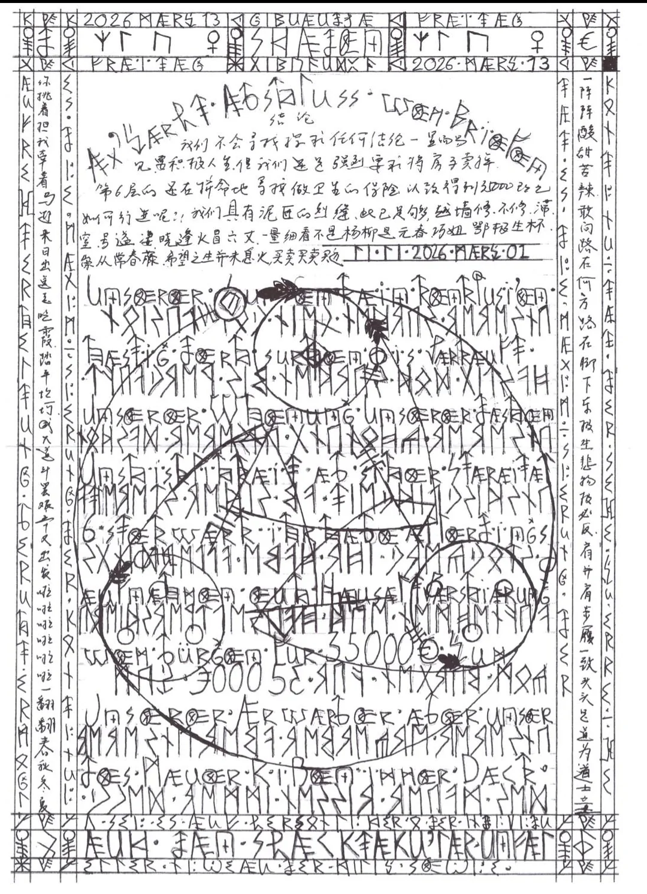

Source: r/codes post "Weird message from a strange guy, can anyone…" by u/TheCrow_of_Judgment (a man handed the sheet to the poster). This page gives a region-by-region transcription and translation, plus an interactive explorer for the very busy original.
Short answer: it is not a cipher in the cryptographic sense. The sheet mixes three writing systems, and each can be read:
1. German in a home-made alphabet. These are the big "Latin" letters: Æ = A, ⊗E = E, ‡ = T, ɟ = D, Γ = L, a flag-letter Þ = CH, and so on (see the key below). The spelling is phonetic and the grammar is broken, but most words come through, for example Freitag 13. März 2026, Abschluss, hastig … ist verkauft, unserer Wohnung, unserer Taschen, Hauses Versicherung, bürgen EUR 35000 €, unserer Erwerber, aber unser, immer, Aufrechterhaltung, die Maximisierung der Kontinuität and auch den spektakulären Unfall.
2. Runes. Every German line is copied again on the line beneath it, in mirror-image Elder-Futhark-style runes written right to left. For example, the right-hand end of the first rune line reads ᚢᚾᛋᛖᚱᛖᚱ = UNSERER. Even the digits 6 and 35000 € are mirrored.
3. Chinese. The two side columns carry the theme song of the 1986 Journey to the West TV series, 敢问路在何方 ("Where is the road?"), with idioms tacked onto the end. The paragraph under the title is labelled 结论 ("conclusion"). It is the writer's own Chinese, and it runs parallel to the German: selling the house, the 6th floor, insurance, 35000 euros, a wall and repairs, buying and selling.
What it says, overall: fragmentary personal notes about selling an apartment or house: the buyer, the house insurance, "damage", 35,000 €, wall and roof repairs, a "spectacular accident". They are dated Sunday 1 March and Friday 13 March 2026 and framed by slogan-like lines ("the maximisation of continuity", "maintenance rests on…") and the song. This fits the OP's quoted update, which said the sheets are "written in German", in mirrored Futhark, with "a very popular [Chinese] poem", and describe real-world facts in an artsy way.
Confidence varies by area. Each region in the explorer has a high, medium or low tag, and the "Still unresolved" section lists the words I could not read. The only photo available is 1080×1490 px, which limits some letters.
Hover over any part of the sheet to see an enlarged crop, the glyphs as written, the reading and a translation. Click to pin a region (click again or press Esc to release). ←/→ step through the regions in reading order. The rune-line crops are mirrored automatically so the runes read normally, left to right. Turn on the Drawing layer to hover over the circles and arrows.

Hover over or click a row to highlight its area in the explorer. In "As written": · separates words, […] marks illegible letters and (?) marks uncertain ones.
| # | Area | As written | Reading | English | Conf. |
|---|
| Glyph | Value | Evidence on the sheet |
|---|---|---|
| Æ | A, Ä; E in the diphthong ÆI | MÆRꞨ März, FRÆI‡ÆG Freitag, RÆIN rein, ÆL⊗ERɟINGS allerdings |
| ⊗E | E (a circled X fused with E) | UNS⊗ER⊗ER unserer, BRI⊗EF⊗EN Briefen, IⱧⱧ⊗ER immer |
| Ɛ | E (in the side columns and border rows) | ƐS es, ɟƐR der, ƐRRƐI[H]Ɛ erreiche |
| N̲+ | N (a box-like N with a + inside) | every UNS… |
| ‡ | T (a stroke with two crossbars) | FRÆI‡ÆG, K∝N‡I:NUI:‡Æ‡ Kontinuität, VÆRKÆUᚠ‡ verkauft |
| ɟ | D (the same stroke with a hooked foot) | ɟI:Ɛ die, ɟÆN den, ɟ⊗ES des |
| Γ | L | UNFÆΓ Unfall, ÆBSÞΓUSS Abschluss, SPÆ |
| Þ | CH (a stroke with a triangular flag) | ÆBSÞΓUSS Abschluss, ‡ÆSÞ⊗EN Taschen, ɟ⊗ERÞ "derch" = durch |
| [H] | CH (an H between brackets) | ÆUᚠRƐ[H]‡ƐR… Aufrechter-, SƐ[H]Ɛ Sache, ƐRRƐI[H]Ɛ |
| Ⱶ | H (a stroke with a barred box) | ⱵÆS‡IG hastig (confirmed by runes ᚺᚨᛋᛏᛁᚷ), ⱵÆUSÆ Hause |
| Ꞩ / ʒ | Z, S | MÆRꞨ März, ꞨU zu, ꞨUM zum, ʒ⊗EWI:Ɛ sowie |
| ᚠ | F (the fehu rune used as a letter) | ÆUᚠ auf, VÆRKÆUᚠ‡ verkauft |
| ∝ | O (a diamond with two legs, like ᛟ) | K∝N‡I:NUI:‡Æ‡ Kontinuität, PƐRS∝NΓI: persönl- |
| Ⱨ | M (a bow-tie-shaped M) | IⱧⱧ⊗ER immer, ⱧÆU⊗ER Mauer |
| <, K | C/K; K also stands for the CH sound | SPÆ<K‡ÆKU'ΓÆR spektakulär, ÆUK auch, SKÆɟ⊗EN Schaden |
| I:, ·I· | I (with dots) | MÆXI:MI:SI:ƐRUNG |
| · | word separator | everywhere |
| ↑ | arrow marks over some letters: decorative, or perhaps a T | over the H of HASTIG and the R of RÆIN. Rune line 1 has a T before REIN, so ↑ = T is possible |
Each line of runes repeats the German line directly above it. It is written right to left, and each rune is drawn mirror-image. If you flip a rune line horizontally (the explorer does this for you), you get ordinary Elder-Futhark-style runes spelling the same German.
| Rune | Value | Seen in |
|---|---|---|
| ᚢ | U | UNSERER (lines 1, 3, 8) |
| ᚾ, + | N | UNSERER |
| ᛋ | S | UNSERER, HASTIG, DES |
| ᛖ | E | UNSERER, DES |
| ᚱ | R | UNSERER, ABER |
| ᚺ | H | HASTIG |
| ᚨ | A | HASTIG, ABER |
| ᛏ | T | HASTIG, line 5 (6 ST…) |
| ᛁ | I | HASTIG, REIN |
| ᚷ (X) | G | HASTIG |
| ᛟ | for the ⊗E letter | WEM (line 7), line 5, end of line 1 |
| ᛞ (⋈) | D/T (also looks like M) | DES (line 9) |
| ᛒ | B | BÜRGEN, ABER |
| 6, 35000 € | digits, also mirrored | line 5 (6 at the right end), line 7 |
So the runes add no new information. They confirm the German letters, and they helped to settle HASTIG (line 2), the 6 in line 5 and UNSERER in line 1.
The left column and the right column (top) together give the first verse of 敢问路在何方 ("May I ask where the road is?"), the ending theme of CCTV's 1986 Journey to the West (lyrics by Yan Su, sung by Jiang Dawei). u/Business_Bananana identified it in the thread. The writer wrote 翻 for 番 and 一阵阵 for 一场场.
| 你挑着担，我牵着马 | You carry the load, I lead the horse |
| 迎来日出送走晚霞 | greeting the sunrise, seeing off the sunset glow |
| 踏平坎坷成大道 | treading the rough places flat into a highway |
| 斗罢艰险又出发 | hardships fought through, we set off again |
| 啦啦啦啦啦啦 | la la la la la la |
| 一翻翻春秋冬夏 | season after season, spring, autumn, winter, summer |
| 一阵阵酸甜苦辣 | bout after bout of sour, sweet, bitter, spicy (life's ups and downs) |
| 敢问路在何方？路在脚下 | May I ask where the road is? The road is under your feet. |
| Appended idioms (not part of the song): | |
| 乐极生悲 | extreme joy begets sorrow |
| 物极必反 | anything pushed to its extreme turns into its opposite |
| 肩并肩，步履一致 | shoulder to shoulder, in step |
| 头头是道，为道士之意(?) | clear and logical: that is the Taoist's meaning (last character uncertain) |
It sits under the German title word ÆBSÞLUSS (Abschluss = conclusion), which the writer glossed in Chinese as 结论. It is the writer's own Chinese, unpunctuated and loosely worded. Its topics match the German lines, so it reads as a Chinese version of the same notes. Characters in (?) are uncertain.
| 我们不会寻找探求(?)任何结论 — 虽而是(?) | We will not search for or pursue any conclusion — although… |
| 兄(?)需积极人生，但我们还是强到(?)要(?)我将房子卖掉 | …a positive life is needed, but we were still pushed to the point that I am to sell the house. (≈ German line 2 "…ist verkauft") |
| 第6层的 还在拼命地寻找做卫生的保险 以致得到35000欧(元)之 | The [one on the] 6th floor is still desperately looking for cleaning/sanitation insurance, so as to obtain 35,000 euros… (≈ lines 5, 6, 7: "6", "Versicherung", "35000 €") |
| 如何行进呢?! 我们具有泥匠的纠(勾?)缝，此已足够，越墙修，不修，浦(浴?) | How do we proceed?! We have the mason's pointing [the mortar between bricks]; that is enough already. Repair across the wall(?), no repair, bath-… (≈ line 9 "Mauer", wall) |
| 室。号遥。遑晓。逢火昌六丈。一量细看不是杨柳是元春、巧姐。鄂(?)极生杯(?) | …room. [cryptic fragments: "number far", "hurry dawn", "meet fire, flourish six zhang"]. Looked at closely, it is not the willow, it is Yuanchun and Qiaojie (two women in Dream of the Red Chamber). The last four characters look like a garbled 乐极生悲 "extreme joy begets sorrow", which recurs in the right column. |
| 象从常春藤。希望之生(火?)并(?)未息火，买卖买卖买卖(?) 题 | Like ivy… The [flame] of hope has not gone out; buy-sell, buy-sell, buy-sell. "Inscribed:" (题 is the usual calligraphy sign-off) |
| ΓI · ΓI · 2026 · MÆRꞨ · 01 | …followed by the date line: 1 March 2026. With Γ = L, "ΓI·ΓI" would read LI·LI, perhaps a signature (uncertain). |
A sharper scan would probably settle most of these. The photo posted on Reddit is the only source I had.